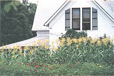
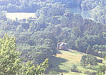

Country Dreaming
September/October 1986
By Paula Thompson
They set out in search of a new beginning.
Many people now in their 30s and early 40s came to northwest Arkansas 10 to 15 years ago, following a dream or escaping a nightmare. Like other waves of immigrants before them, they set out in search of inexpensive land and a new beginning.
Why They Came
Despite his degree in industrial engineering from Georgia Tech, Bob Jordan chose to live in the country. He found Vermont winters too hard on southern bones, and according to the map he consulted, Arkansas had less population per square mile anyway. In 1974, at age 29, Bob came "to settle down."
Barbara Jordan wanted to live someplace warmer and prettier than the south side of Chicago, where she grew up. In 1971, at age 21, she discovered rural Arkansas and "fell in love." She stayed.
After a 1972 visit to friends here, Wyit and Lillian Wright bought 40 isolated acres. Two more years at their Tucson jobs, teaching and managing a satellite tracking station, paid for their land: "When we moved onto it at last, in search of freedom and tranquility, we felt like a retired couple in our late 20s."
Bill Brown, a corporate headhunter in Memphis, read Future Shock the year he turned 30. He experienced it the morning after Martin Luther King Jr. was assassinated in Memphis. That day, Bill and his wife, Jeannette, began planning their family's flight from the city.
Gregg Thomas (1973), Loretta Shelton (1975), and Mike Stephenson (1975) all came to learn about agriculture. Nancy followed Mike from a New Orleans society family. She was "into health foods" and imagined farming would be "heaven." All were in their early 20s.
What They Found
"Despite all our reading and planning, we were ill prepared," Bill said, shaking his head ruefully. "My corporate skills didn't apply in the new context. The first winter, I bought a woodstove because it was part of our lifestyle image. Of course I didn't have a chain saw, an axe, a truck, or any place to cut wood, but I had a woodstove."
The urban escapists learned a lot of things the hard way. They bought hundreds of acres of inexpensive land, only to find that it had neither water nor access roads - that even minimal utilities were years away. Wyit developed a rule of thumb for friends looking for acreage: "Buy a place with at least an old house on it. That means somebody once was able to live there."
As families grew and resources didn't, the stress mounted on many formerly carefree immigrants. "The early years were paradise on Mossy Creek," Wyit recounted with a grin. "The biggest decision we had to make in a day was where to go swimming that afternoon. There were lots of parties, minimal pressures, good times. We had a strong sense of community."
"We all had the same needs," Lillian explained. "We have a well-established food-buying club in the Fayetteville Co-op. But there aren't many of us left who started out with it."
The sense of being in the same boat sustained them for a while. In many places, a gathering of 50 people for an afternoon potluck or cooperative workday wasn't unusual. But varying degrees of success began creating problems in paradise.
"Our business was going well, but when we wanted to go out to dinner and a movie, we couldn't think of anyone with money enough to come with us," Wyit remembered sadly. "It got kind of lonesome, being the only ones with any discretionary funds."
At first, many took pride in the primitiveness of their living conditions. The Wrights mentioned a neighboring family who bragged about getting through one whole year on only $500. But the cost was higher in the end. The family broke up. "The wife is a CPA in Tulsa now." An apprentice Yuppie making up for lost time, they imagine.
What They Did
Gregg and Loretta developed and managed a 400-acre farm at Cass on salaries, but watched their friends grubbing and losing ground. "All your time is spent surviving and worrying," Gregg said. "It grinds you down. Pretty soon, you're fighting over where to plant the carrots."
The people who stuck it out, adapting rather than abandoning their dreams, often turned to entrepreneurship as an alternative to a town job or a supplement to farming.
Bob and Barbara started with one hive of bees. When they built up their own apiary, they formed coalitions with other beekeepers to service fruit growers' pollination needs. For the past five years, they've sustained an average of 120 hives, marketing tons of Spring Fever Farm honey through direct and mail-order sales.
Mossy Creek Woodworks started making "practical things," but the Wrights quickly found that toys sold better. By their second year, they had a stable income from a line of wooden toys taken to craft fairs, Silver Dollar City, and local outlets. After the arrival of a son took Lillian out of the business, Wyit hired extra people to make the toys. He turned his attention to wholesale marketing through such outlets as the Metropolitan Museum of Art and the Museum of American Folk Art in New York. A new interest in computers helps him keep up with accounts as far-flung as Alaska and Puerto Rico.
Loretta and Gregg's Ozark Horticultural Services offers consulting, landscaping services, and blueberry plants. "I knew about growing things," Loretta said. "What I had to learn about was business."
Nancy's farming "heaven" came crashing down "like a lead balloon the first strawberry harvest season. It was awful. I have a picture of me sitting under a tent, nursing my baby and trying to deal with pick-your-own customers. I didn't think I'd survive!" For a city-bred woman, it was a heavy dose of rural reality.
After an initial financial disaster, Bill took a job as a community organizer based 26 miles from his home in Busch. His first annual salary in Arkansas equalled his previous year's taxes. "You have to simplify your economic demands and expectations, or you have to leave," he said flatly. "The Ozarks can be a very unforgiving context."
The Compromises
The Wrights came with the goal of "voluntary simplicity," but, Lillian added quickly, "we chose this house because it had indoor plumbing."
After the birth of their fourth child, Barbara came to a "gradual, disappointing realization that life would be easier in town." Their oldest was school age, and the small, rustic farmhouse was too crowded and stressful for the family. When the highway department paid for a right of way through their land, they bought a house in Fayetteville, though Bob continues to work at the farm.
"I always thought I wanted to live and work at the same place, but I find I'm more productive with the two separated. There are fewer distractions," he added with a mischievous smile at his nearly new daughter.
The age of children appears to be a determining factor in changes of residence and lifestyle. The Wrights have loved their isolation on Mossy Creek but are now considering a move to Fayetteville. Lillian is tired of driving several miles of rugged dirt trail and 50-plus round-trip miles of highway to Fayetteville for Josh's preschool and Suzuki lessons.
"You grow up when you have to take responsibility for someone else," Lillian summed up. "We chose him. We owe him."
ON THE ROAD TO THE OZARKS
Each wave of immigrants worries about the effects of the next wave of immigrants - that they will spoil the unspoiled . . . uncomfortably increase the competitor for opportunity ... re-create the problems everyone came here to escape . . . destroy the refuge they seek.
But one urban escapee from the late '60s has some respect for many of the Ozark newcomers. "The escaping in-migrants today are more sophisticated than we were, better armed with money and tools. When they flee the cities, they're set up for it. They'll probably make it, too! From my own experience, the people who realized their dream 10 years ago were the ones who didn't act impulsively. They researched an area before they bought land, and they paid for the land before they moved. That's the best advice I could give anyone planning to come here now."
Ozarkers have always prided themselves on being individualistic, free, unwilling to march to anyone's time but their own or take anyone else's word for how life should be lived. They tend to stick to their own business when allowed to do so. This traditional tolerance appeals to highly divergent types: gentlefolk, militant fundamentalists, bigots, and the targets of their bigotry. All seek the benign neglect of the backwoods.
But how long will it be possible to maintain that kind of elbow room? The number of people per square mile in 10 northern counties of the Arkansas Ozarks (Baxter, Benton, Boone, Carroll, Madison, Marion, Newton, Searcy, Stone, Washington) increased 156% in 20 years, from 25 in 1950 to 39 in 1980. In the three most populous counties, density has more than doubled in the past 50 years (Baxter 289%, Benton 222%, Washington 256%).
As the population continues to increase, the conflicting aims of these diverse groups may focus into sharper contrast. If the right to stretch your arm ends at the other fellow's nose, the next wave of Ozark immigrants may have to play it closer to the vest than their predecessors ever dreamed of.
- Paula Thompson
A Decade Later
After 10 years, give or take, how do they feel about their Ozarks experience?
"We have no regrets," Loretta said, "but we've evolved. It's nice to live in a pretty place, but there's no time to enjoy it when you're scrabbling for an existence. I don't want to be an old lady on welfare, so I have to do something about it now."
The something was to accept a job with a horticultural firm in Australia, doing pretty much what she's been doing but for a healthy, guaranteed salary.
Involved for the past two years in Arkansas location filmmaking, Gregg hopes he'll be able to continue his new direction in Australia. Once again, they're emigrating for a new beginning.
"Our life has been almost too good, too easy here," Wyit said with a twinge of guilt. "Our business has financed our lifestyle - never driven us. As crafters we can plan ahead, work when we want to. Your own business allows you control. We'll always want freedom and privacy wherever we live, but after 10 years a change is welcome. We'll be glad to be nearer a library, places to eat out, friends, playmates for josh. But we'll still evaluate ourselves by our own standards."
Barbara's eyes glow intensely when she talks about her Ozark odyssey. "Life is better in the country. I miss it, body and soul. We came as a result of our need to get back in touch with the earth, with ourselves. That need hasn't changed. A lot of people who left are only trying to make enough money to get back here."
Holding On to the Dream
"The gentlefolk back-to-the-landers," as MOTHER once styled them, have found many paths to their dreams. A major commonality is the persistent sense of community, of networking, of intentionally chosen extended families. Some of that can be traced to common experience, some even to a ghetto mentality, but a great deal more must be charged to the nature of these gentle revolutionaries. They work hard, they care for each other, they still believe the world can be improved by demanding less and contributing more. They make good neighbors, and they are good children for an increasingly strained Mother Earth.
Paula Thompson, an Ozark native, is a writer, an award-winning actress, a child-development specialist, and a blueberry farmer.
|
 Bottom land is cherished . . .right on up to the house's porch. |
 Wyit and Lillian Wright enjoyed the isolation of their remote home for a time, but they're now considering moving their growing family to Fayetteville. |
 A rural scene near the town of Eureka Springs. |